7月が旬の食材
7月に旬を迎える食材は68品目です。魚介30品、野菜23品、果物15品。
魚介30品目
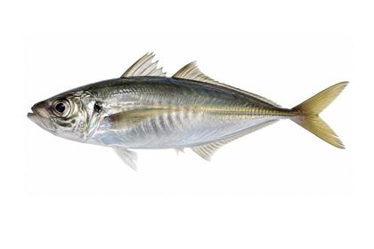
マアジ5月〜7月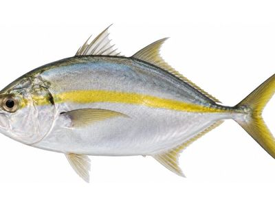
シマアジ6月〜9月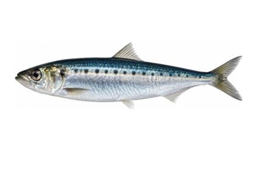
マイワシ6月〜8月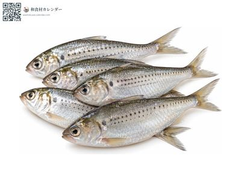
コハダ7月〜9月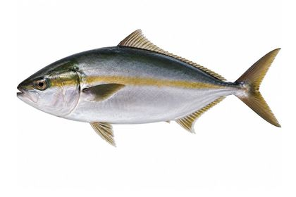
カンパチ6月〜9月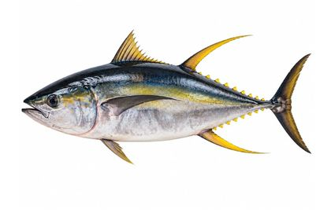
キハダマグロ6月〜9月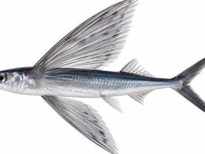
トビウオ5月〜7月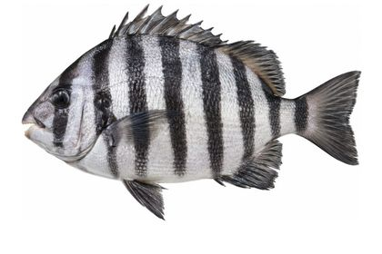
イシダイ6月〜8月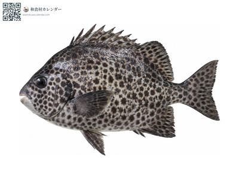
イシガキダイ6月〜8月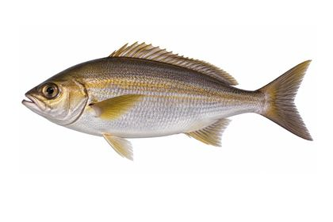
イサキ5月〜7月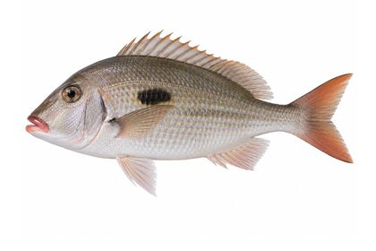
フエフキダイ5月〜8月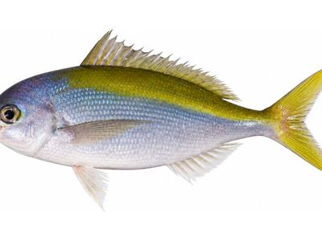
ウメイロ6月〜9月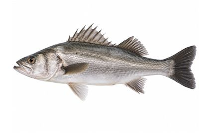
スズキ6月〜8月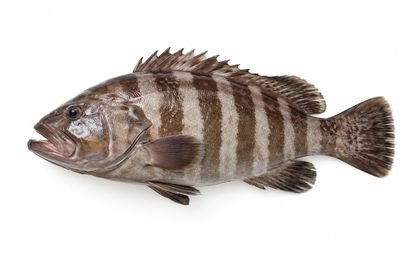
マハタ6月〜8月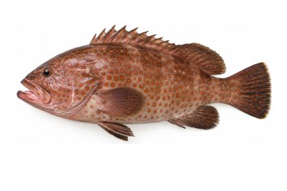
キジハタ6月〜8月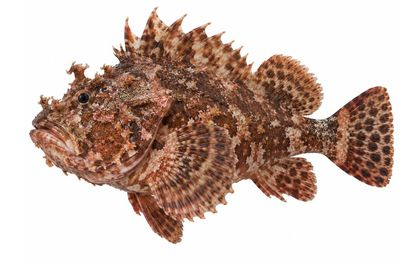
オニオコゼ6月〜9月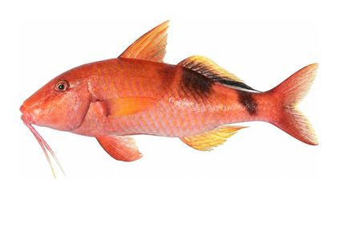
オジサン6月〜9月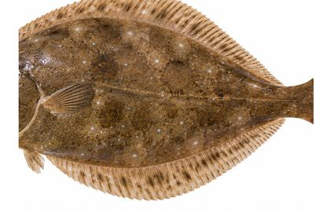
マコガレイ6月〜8月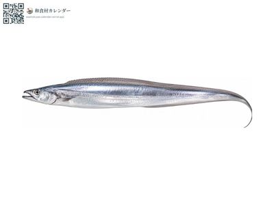
タチウオ7月〜9月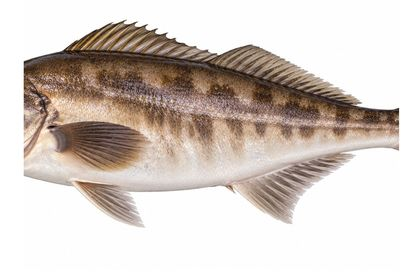
ホッケ5月〜7月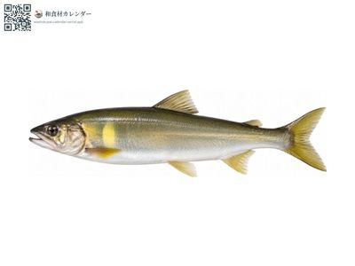
アユ6月〜8月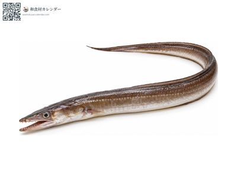
ハモ6月〜8月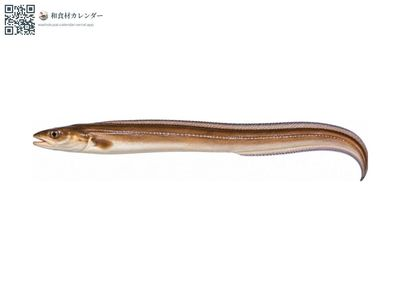
アナゴ6月〜8月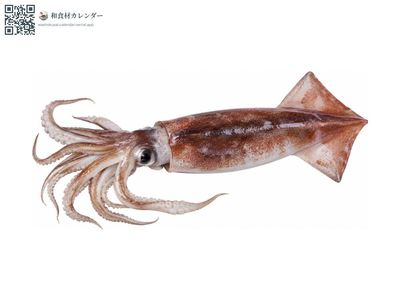
スルメイカ6月〜9月 マダコ6月〜8月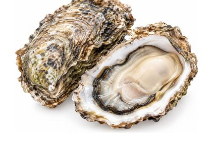
岩牡蠣6月〜8月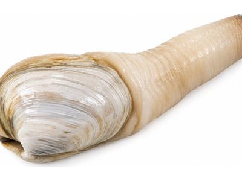
シロミル貝5月〜8月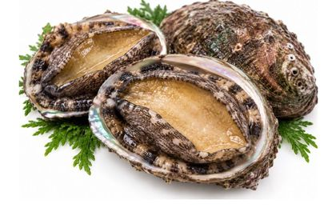
アワビ6月〜8月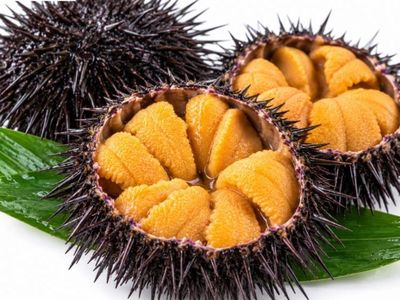
ウニ6月〜8月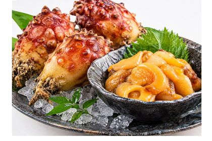
ホヤ6月〜8月野菜23品目
レタス4月〜8月
つるむらさき6月〜8月
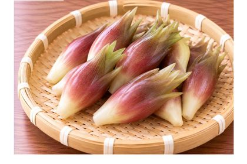
ミョウガ7月〜9月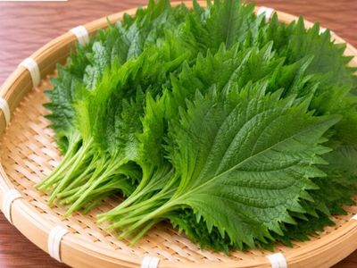
シソ6月〜9月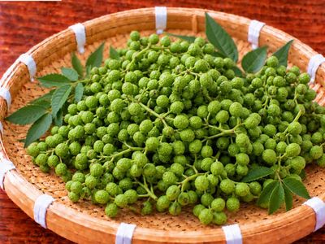
実山椒6月〜7月 生姜7月〜9月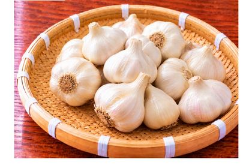
ニンニク6月〜8月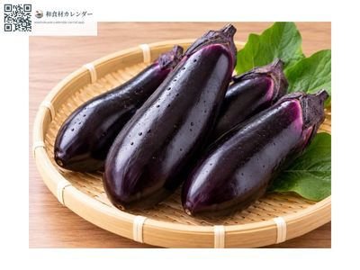
ナス7月〜9月 キュウリ6月〜8月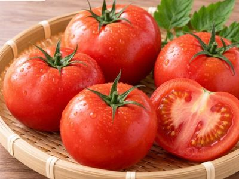
トマト6月〜8月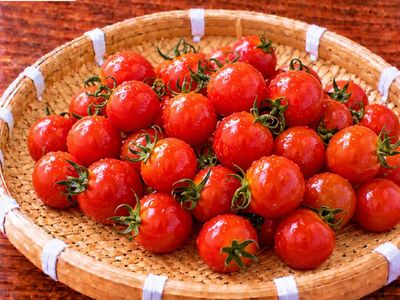
ミニトマト5月〜7月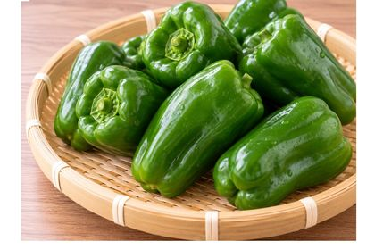
ピーマン6月〜9月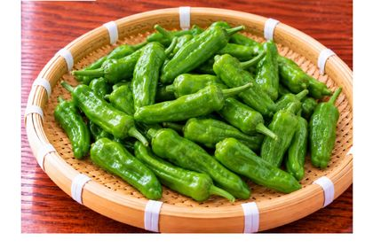
ししとう6月〜8月 万願寺とうがらし6月〜8月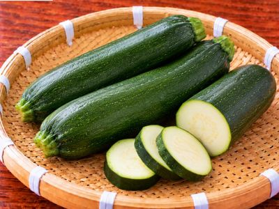
ズッキーニ5月〜7月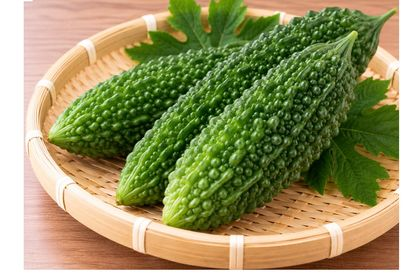
ゴーヤ6月〜8月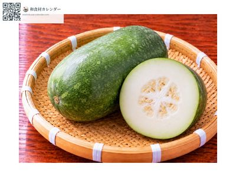
冬瓜6月〜8月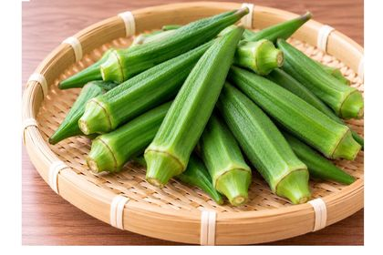
オクラ7月〜9月 トウモロコシ6月〜8月 ハスイモ7月〜9月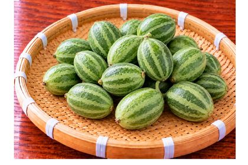
子メロン6月〜8月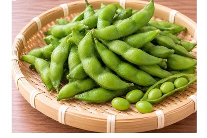
エダマメ7月〜9月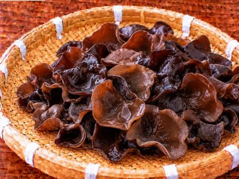
キクラゲ6月〜9月